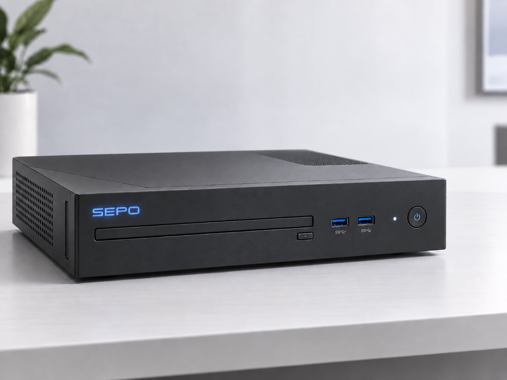
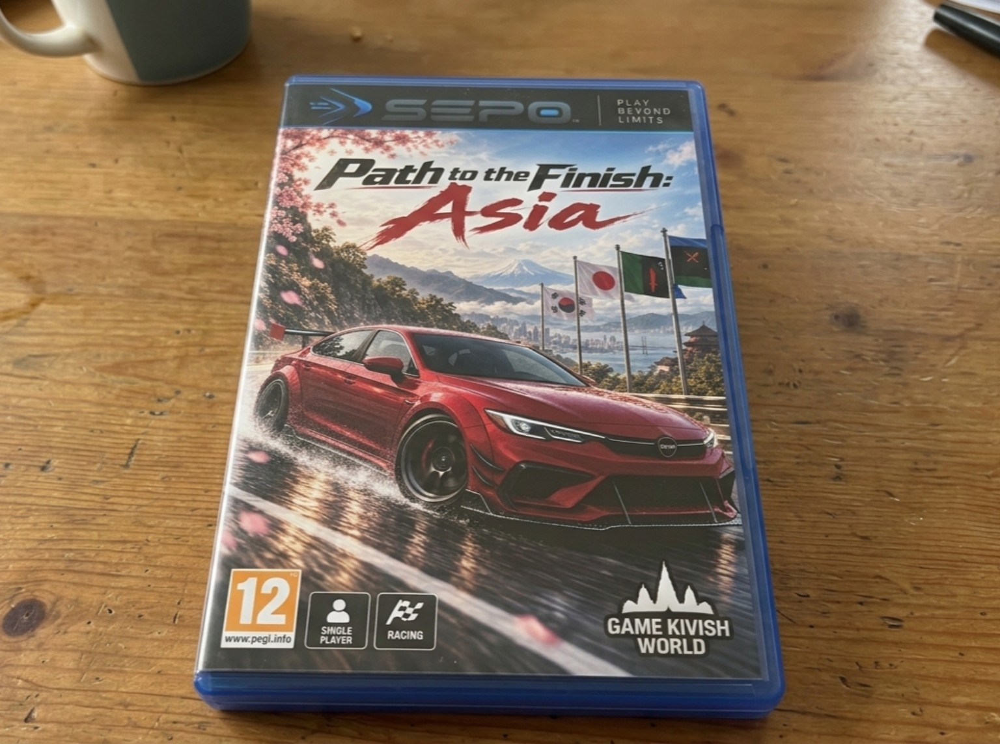

Sepo
Sepo — домашняя игровая консоль и одноимённая игровая платформа, выпускаемая компанией Taseko с 2023 года. Потребительским брендом системы является именно Sepo: это название используется для консоли, её интерфейса, магазина Sepo Store, программной экосистемы и позднее Sepo Launcher, тогда как Taseko выступает разработчиком и производителем.
Sepo создавалась как сравнительно недорогая телевизионная система на переработанной ноутбучной архитектуре. Платформа получила собственную операционную систему на базе Linux, встроенный Steam, отдельный магазин Sepo Store, оптический дисковод и поддержку контроллеров Xbox, PlayStation и Nintendo. В первые годы главным ограничением была не аппаратная часть, а собственная библиотека Sepo Store, которую приходилось развивать отдельно от уже существующего каталога Steam.
История
2023: разработка и первый выпуск
Разработка Sepo началась в 2023 году. Основатель Taseko хотел создать игровую систему, в которой пользователь сохранял бы доступ к приобретённым играм и не зависел полностью от подписочной модели или единственного закрытого магазина. Ранняя команда проекта состояла из четырёх человек.
Идея аппаратной платформы появилась после решения не проектировать вычислительную часть полностью с нуля, а переработать уже существующую архитектуру игрового ноутбука. Для инженерного прототипа был куплен Acer Nitro 5 2023 года с процессором Yoa. У ноутбука сняли экран, клавиатуру, штатный корпус и другие элементы, не требовавшиеся домашней консоли, сохранив основные вычислительные компоненты.
Материнская плата была переработана под размеры будущего корпуса. Чертежи передали MIKOJI, производителю плат и владельцу Yoa, после чего была получена партия новых плат и процессоров. Корпус заказали у китайских производителей, а для графической части были закуплены мобильные графические чипы NVIDIA RTX 3050 Mobile. Параллельно создавалась собственная Linux-based система.

После сборки первых рабочих экземпляров систему проверяли в том числе с контроллером Xbox. Небольшая пилотная партия Sepo поступила в продажу в 2023 году только в столице. Цена составляла около 420 долларов.
2024: рост производства и стабилизация системы
В 2024 году выпуск Sepo постепенно увеличивался, а себестоимость производства снижалась. Одновременно исправлялись драйверы, улучшалась совместимость дисковода, дорабатывался сайт и расширялось количество игр, нормально работающих на системе. Прямой доступ пользователя к ядру операционной системы был закрыт в целях безопасности.
Основой программной модели Sepo стало одновременное существование Steam и Sepo Store. Пользователь мог покупать и запускать игры через Steam либо использовать внутренний магазин платформы. Для наполнения Sepo Store издателям предлагалось выпускать отдельные версии игр для магазина, а часть ранних переносов выполнялась с участием игровой студии. К концу 2024 года отдельные издатели начали выпускать для Sepo также физические диски.
Sepo Store, аватары и интеграция со Steam
К концу 2024 года в экосистеме Sepo появилась система пользовательских аватаров. По общей идее она напоминала аватары эпохи Xbox 360, но имела собственный визуальный стиль.
При покупке новой игры в Sepo Store пользователь получал случайный косметический предмет, связанный с этой игрой, который добавлялся в библиотеку одежды аватара. Таким образом покупки во внутреннем магазине формировали отдельную коллекцию предметов, не блокируя при этом использование Steam.
В Steam появилась бесплатная позиция Sepo, выполнявшая роль связующего элемента между аккаунтом Steam и экосистемой Sepo. Она сама не являлась полноценной игрой, но использовалась для отображения связанных элементов профиля и достижений, а также для интеграции покупок внутреннего магазина с привычной библиотекой пользователя.
2025: международный выход
В начале 2025 года Sepo начала официально продаваться на зарубежных рынках. Производство увеличивалось постепенно, а система получала региональные языки и способы оплаты.
В Японии использовался японский интерфейс, в России и Беларуси — русский, в Украине — украинский, в Казахстане — казахский, в США — английский. В европейских странах использовались местные языки соответствующих рынков.
В Sepo Store добавлялись локальные способы оплаты. Платформа продолжила официальную работу в Российской Федерации и поддерживала доступные внутри страны банковские системы; местные способы оплаты также использовались в Украине, странах СНГ и других регионах присутствия.
Отдельной проблемой стала Франция. Французский интерфейс и сама консоль были доступны, однако карточные платежи внутри Sepo Store некоторое время работали некорректно. Владельцы Sepo во Франции могли пользоваться Steam, но не могли нормально покупать игры непосредственно во внутреннем магазине.

Path to the Finish: Asia
Главным эксклюзивным релизом Sepo в 2025 году стала Path to the Finish: Asia (PttF:A), разработанная и поддерживаемая студией Game Kivish World (GKW). Игра не создавалась внутренней командой Taseko и выпускалась как эксклюзив экосистемы Sepo.
PttF:A стала прямым конкурентом Forza Horizon, но использовала другую структуру. Вместо одного региона игрок получал большое автомобильное путешествие по Восточной Азии. Кампания начиналась в Кивише, проходила через Японию, Китай, Южную Корею, ККП, Вьетнам и другие территории, а затем возвращалась в исходную страну. Полное прохождение оценивалось примерно в 163 часа.
Автопарк включал большое количество современных, редких и уже исчезнувших марок. В частности, GKW добавила автомобили бывшей Pyeonghwa Motors, поскольку к этому времени компания уже не существовала как действующий производитель.
Игра стала первым крупным системным эксклюзивом Sepo: до этого платформа привлекала прежде всего ценой, универсальностью, Steam и открытым выбором магазина, а PttF:A впервые дала пользователям отдельную игровую причину покупать именно Sepo.
2026: рост библиотеки и повторные переговоры с издателями
После роста интереса к Sepo и успеха PttF:A в 2026 году издателям повторно предложили выпускать игры непосредственно для платформы и Sepo Store. В отличие от раннего периода, переговоры проходили уже на фоне сформировавшейся международной аудитории и заметного эксклюзива.
К этому времени команда, работавшая над платформой, выросла примерно до 30 человек. На фоне интереса к первой PttF:A внутри команды рассматривалась идея заказать той же студии разработку второй части, однако на этом этапе продолжение ещё не было подтверждено как запущенный в производство проект.
Исправление платежей во Франции
В 2026 году проблема французских карточных платежей была устранена после совместной настройки работы с французской банковской системой и Центральным банком Франции. После обновления владельцы Sepo во Франции снова получили возможность оплачивать игры картой непосредственно в Sepo Store.
При первом включении консоли после изменения в верхней части интерфейса появлялась системная иконка «Новые детали», через которую сообщалось о восстановлении карточной оплаты.
Sepo Launcher и выход за пределы одной консоли
В 2026 году Path to the Finish: Asia стала доступна на Mikutu, но не через Steam. Пользователь устанавливал отдельный установщик, который ставил Sepo Launcher, после чего сама игра загружалась уже через него.
После этого PttF:A перестала быть строго аппаратным эксклюзивом одной домашней консоли, но сохранила статус эксклюзива программной экосистемы Sepo. Одновременно Sepo начала существовать не только как конкретное домашнее устройство, но и как отдельная программная игровая платформа.
Аппаратная архитектура
Sepo выросла из ноутбучной архитектуры, переработанной под стационарный телевизионный форм-фактор. Первоначальный инженерный прототип основывался на Acer Nitro 5 2023 года. В серийной системе использовались процессоры Yoa, платы производства MIKOJI и мобильные графические решения NVIDIA RTX.
Отказ от дисплея, клавиатуры, аккумуляторно-портативного форм-фактора и стандартного ноутбучного корпуса позволил перераспределить пространство под охлаждение и сделать устройство ближе к традиционной домашней консоли. Точные модели процессора и графического чипа в доступных материалах не указывались.
Программная экосистема
Sepo использует собственную операционную систему на базе Linux. Главной особенностью платформы с самого начала стало одновременное присутствие двух каналов цифровой дистрибуции: встроенного Steam и Sepo Store.
Steam обеспечивал доступ к существующей PC-библиотеке и снижал зависимость новой консоли от собственного каталога. Sepo Store развивался как отдельная часть экосистемы с физическими изданиями, аватарами, косметическими предметами, достижениями и прямыми версиями игр от издателей.
Появление Sepo Launcher в 2026 году расширило понятие платформы Sepo за пределы одной аппаратной системы: отдельные эксклюзивы могли распространяться на совместимых устройствах, оставаясь внутри программной экосистемы Sepo.
Бренд
Sepo является потребительским названием игровой платформы. Именно бренд Sepo используется на системе, в магазине, программных сервисах и игровых изданиях. Название Taseko относится к компании-разработчику и производителю и не заменяет бренд Sepo в оформлении самой платформы.